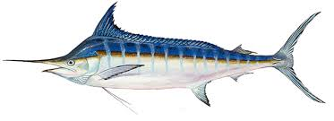

Marlins are large, powerful fish known for their elongated bodies, spear-like snouts, and impressive speed. Found in warm waters across the globe, marlins are prized both as sport fish and as symbols of oceanic power and beauty.
This site explores the different foods they eat, where they live, and how to catch one for yourself.
